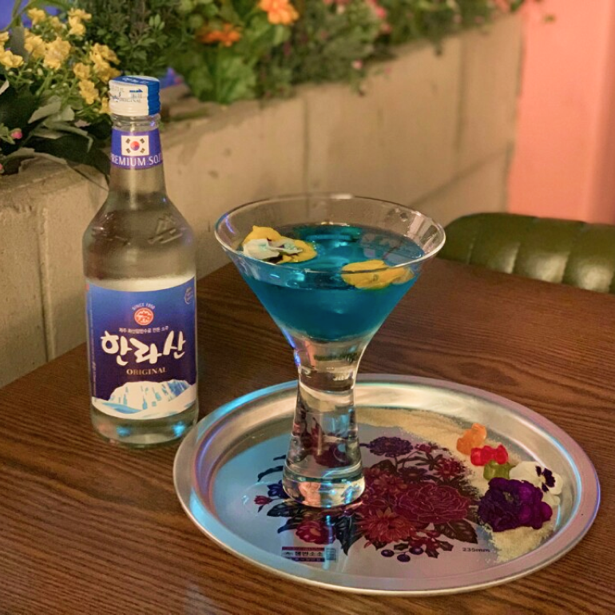
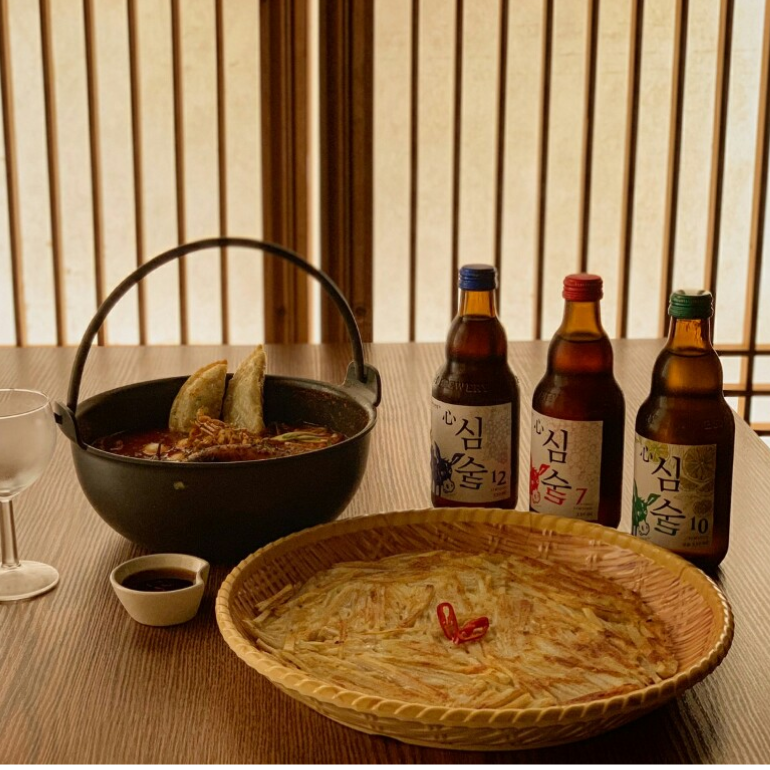
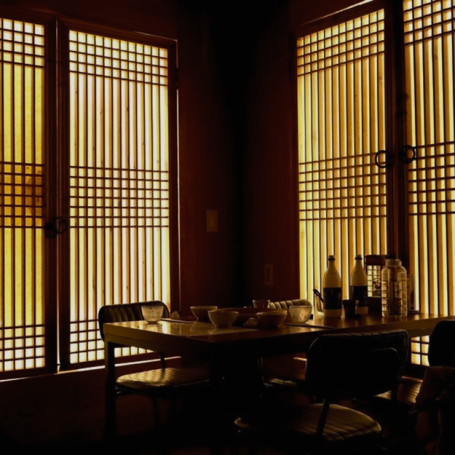
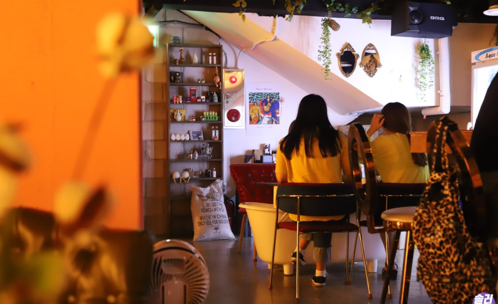

シャロスキルに位置する居酒屋で、伝統的な韓屋デザインの空間と'ヒップ'なデザインの空間が調和した店舗である。 焼酎、ビール、伝統酒、カクテル、ワインなど様々な種類のお酒を味わうことができ、プルコギ鍋、キムチチーズチヂミなど多様な種類の韓国式おつまみと酒類を一緒に楽しむことができる。 特にお酒の種類は非常に多く、韓国の名人が作った焼酎や地元の蒸留酒も味わえる。 店内は静かで雰囲気の良い空間でデート場所または小規模な集まりを持つのに最適なところだ。
この場所を訪れるなら、韓国の3大伝統焼酎珍島紅酒で作ったカクテル「真紅ボール」や「朝鮮パブウォールのおすすめセット」がおすすめだ。 普通の焼酎よりは普段見たことのないお酒を飲んでみることをお勧めする。

>
住所 : ソウル特別市冠岳区奉天洞南部循環路224キル31
最寄りの地下鉄駅 : ソウル大学入口駅(徒歩2分)
ホームページ : https://www.siksinhot.com/P/1167629
近くの観光地

- シャロスキル
- 住所 : ソウル冠岳区奉天洞(クァンアクク·ボンチョンドン)
- ホームページ : https://goo.gl/maps/BMaZ4ZU38wioxTc97
- シンリムチョン
- 住所 : ソウル特別市冠岳区ボンチョンロ248
- ホームページ : https://www.siksinhot.com/P/358216